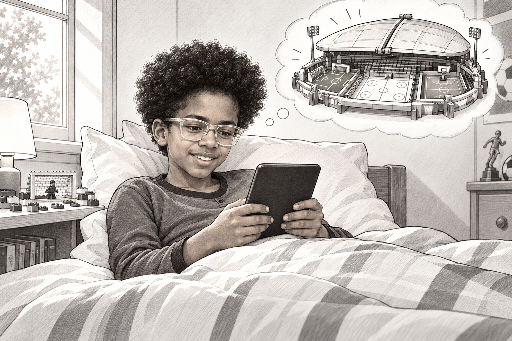
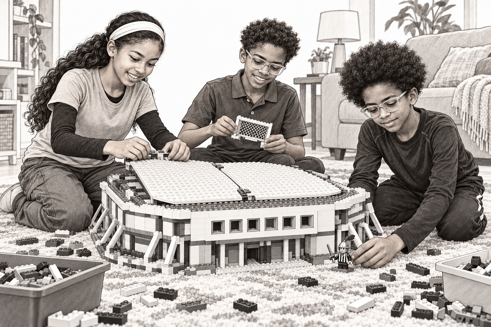
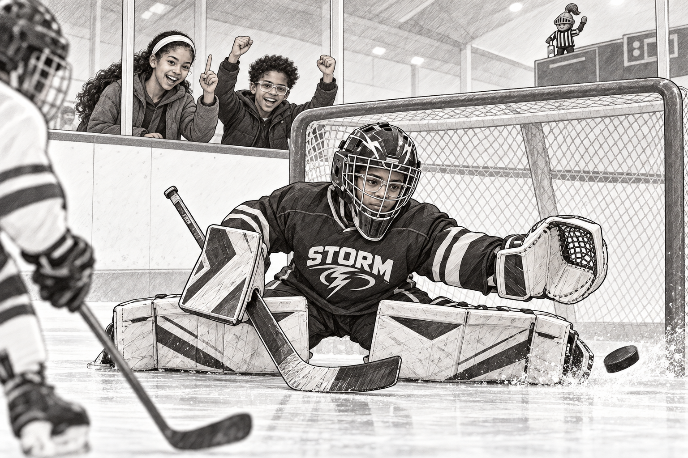
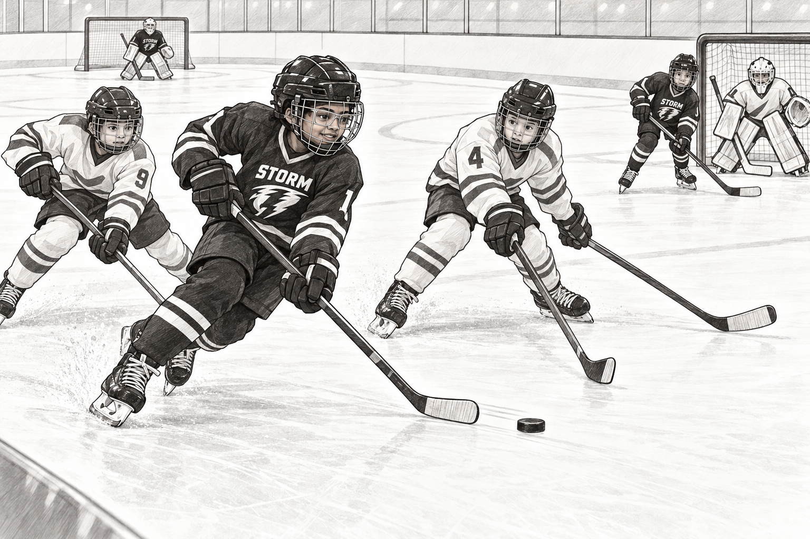
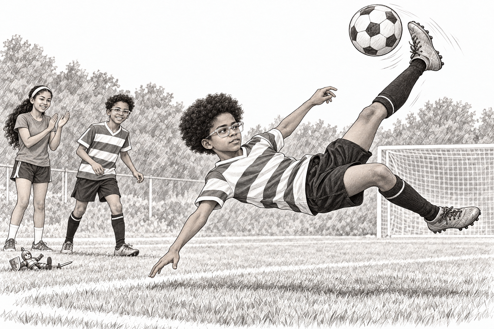
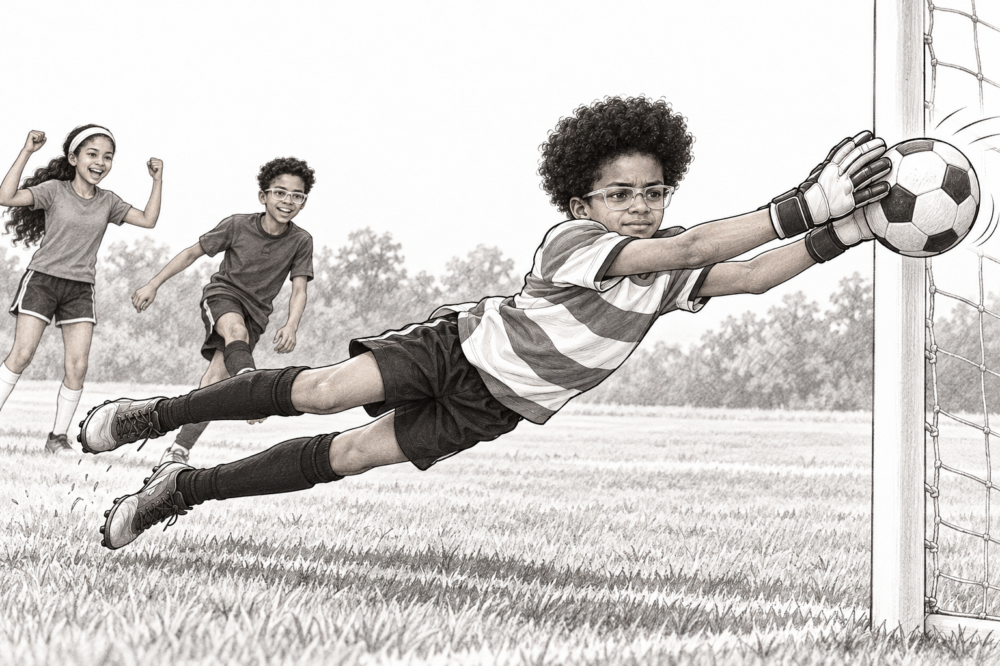
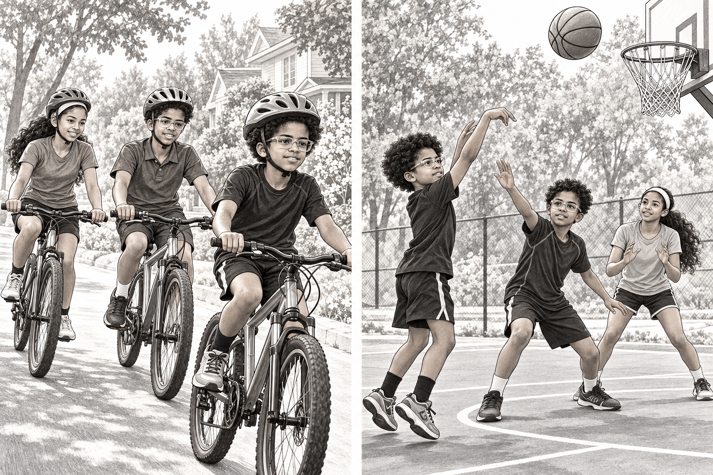
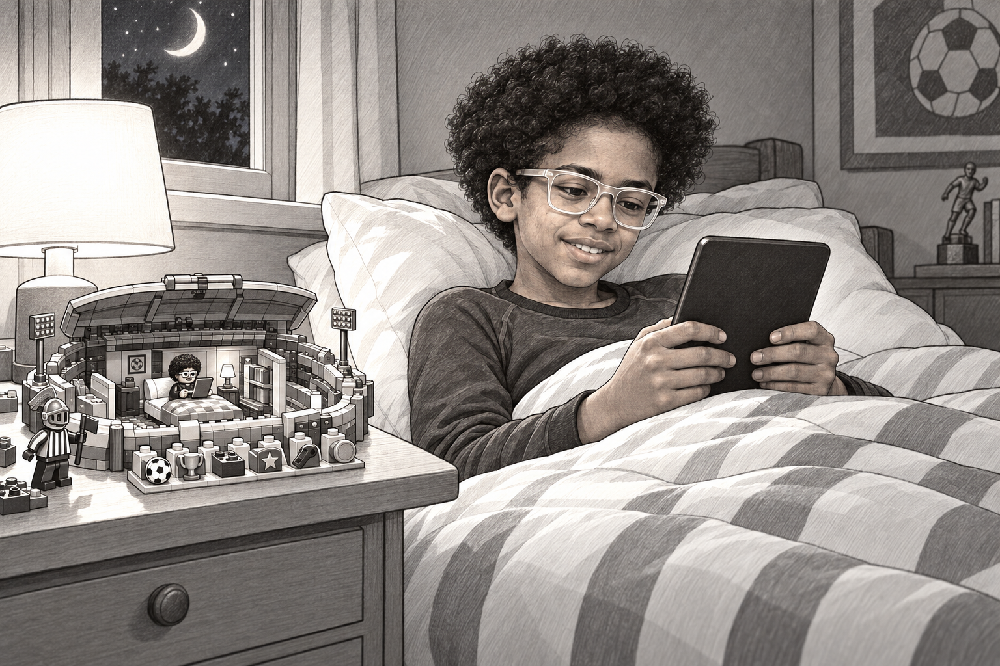

Izzy et le stade impossible
1. Encore une page

Izzy était encore au lit quand il découvrit le stade impossible.
Pas dehors, par la fenêtre. Dans l'histoire qu'il lisait sur son Kobo.
Il y avait une patinoire, un terrain de soccer et un terrain de basketball. Le toit était coincé en position fermée.
Izzy sourit. Il savait exactement qui pourrait arranger ça.
« Raph ! Ruth ! J'ai une idée ! »
Raph apparut dans l'encadrement de la porte. « Il faut ranger quelque chose ? »
« Il faut des Lego. »
« Excellent, dit Raph. Tout le contraire. »
2. Le centre de contrôle

À l'heure du déjeuner, leur propre stade en Lego couvrait le tapis.
Ruth construisit un toit qui s'ouvrait en se repliant. Raph construisit les buts. Izzy ajouta un petit chevalier avec un sifflet.
« L'arbitre », expliqua-t-il.
« Pourquoi a-t-il une épée ? » demanda Ruth.
« Des règles très strictes. »
Ils inventèrent une nouvelle aventure : six jetons sportifs déverrouilleraient le toit. Chaque jeton était une brique Lego différente. Tout ce qui allait suivre appartenait à leur histoire inventée.
Izzy tapota le chevalier. « Première destination : le Storm ! »
Dans leur imagination, le petit stade devint immense.
3. Avis de tempête

Izzy se tenait dans la zone du gardien avec son équipement de gardien du Storm.
Un joueur fonça vers lui. La rondelle disparut derrière un bâton, puis arriva à toute vitesse, près de la glace.
Izzy descendit en position papillon. Ses jambières couvraient le bas du filet.
POUM !
La rondelle rebondit loin du but. Raph cria de joie derrière la bande. Ruth leva un doigt.
« Premier jeton ! »
Izzy leva sa mitaine. Le petit chevalier arbitre, maintenant perché sur le tableau de pointage, faillit tomber en célébrant.
« Il faudrait lui trouver un casque », dit Raph.
4. Autre équipement, même Storm

Le Storm avait deux gardiens. Maintenant, l'autre gardien prenait le filet, et Izzy passait au jeu comme patineur.
« À toi de les arrêter », dit Izzy en tapant le gant de son coéquipier.
Il embarqua pour sa prochaine présence et patina avec la rondelle vers le coin.
Deux défenseurs le suivirent. Izzy aperçut un coéquipier près du filet et glissa une passe entre leurs bâtons.
Toc. Tir. But !
Ruth lui donna le deuxième jeton.
« Je pensais que tu allais tirer », dit Raph.
« Eux aussi », dit Izzy.
5. Le Hornet volant

La glace devint du gazon. Izzy portait maintenant son chandail de soccer des Hornets.
Raph lui envoya une passe haute. Izzy regarda le ballon descendre, se pencha en arrière et tenta le retourné acrobatique qu'il adorait essayer comme attaquant.
Un pied monta. L'autre frappa le ballon.
PAF !
Le ballon fila dans le but. Izzy atterrit sur le gazon et leva les yeux.
Ruth applaudissait. Le chevalier était lui aussi couché sur le dos.
« Il te copie », dit-elle.
« Troisième jeton, dit Izzy. Et un très mauvais arbitre. »
6. L'arrêt volant

« À mon tour de tirer », dit Raph.
Izzy enfila des gants de gardien. Il aimait ce rôle autant que celui d'attaquant.
Raph visa le coin le plus éloigné. Izzy prit son élan, plongea sur le côté et tendit ses deux gants.
Pendant un merveilleux instant, il sembla flotter dans les airs.
Ses mains touchèrent le ballon et le repoussèrent à côté du poteau.
« Tu n'étais pas censé l'atteindre ! » dit Raph en riant.
« Je n'ai pas demandé l'avis du ballon », répondit Izzy.
Ruth sortit le quatrième jeton. Le sifflet du chevalier s'était mystérieusement transformé en petite fleur.
7. Le grand détour

Les portes du stade s'ouvrirent sur leur quartier. Trois vélos les attendaient dehors.
« On fait un détour pour rentrer ? » demanda Ruth. Tout le monde attacha son casque.
Ils pédalèrent devant des jardins familiers et saluèrent un voisin. Au parc, le cinquième jeton les attendait près du terrain de basketball.
Il ne restait qu'un emplacement vide.
Izzy fit rebondir le ballon de basketball. Raph le marquait. Ruth attendait près du panier.
Passe à Ruth. Passe en retour. Izzy tira.
Le ballon tourna si lentement sur le cercle que tous les trois retinrent leur souffle.
Puis il tomba dans le filet. « SIX ! »
8. Le toit s'ouvre

De retour sur le tapis, Izzy enfonça six briques Lego dans six emplacements vides.
Ruth souleva le toit du stade. À l'intérieur, Raph avait caché une petite chambre.
Un minuscule Izzy était couché dans un lit en Lego et tenait une brique grise toute plate.
« Son Kobo, dit Raph. Évidemment. »
Ce soir-là, le vrai Izzy se glissa dans son lit et ouvrit son propre Kobo. Six aventures, c'était bien assez pour une seule journée imaginaire.
Il lut jusqu'à ce qu'il ait sommeil, puis posa le Kobo à côté de son oreiller.
Demain matin, avant de se lever, une autre page l'attendrait.
Et peut-être un autre stade impossible.
À toi de jouer
Que mettrais-tu dans le prochain stade en Lego d'Izzy ?